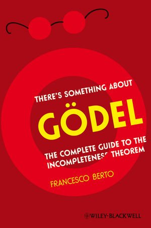

Berto: There’s Something About Gödel

Francesco Berto’s There’s Something About Gödel (Wiley-Blackwell, 2009) is cheerfully sub-titled “The complete guide to the incompleteness theorem”. That, I take it, is a joke. But Berto does try to give a sense of how the theorem can be proved in roughly Gödel’s way, which is complete enough to provide a decent platform for ensuing philosophical discussion. So the first seven chapters are pretty informal exposition (though aiming to give some real sense of how the incompleteness theorems are proved). The last five chapters are more philosophical.
Chapter One is a whistle-stop tour through some background (introducing e.g. the Liar Paradox and Russell’s Paradox, explaining what an axiomatic theory, what an algorithm is, and so on). This is done with a light touch, but not always with ideal accuracy. The most misleading claim is probably that “the amazing developments of mathematics in the nineteenth century” allowed “the reduction of higher parts of mathematics to elementary arithmetic” (p. 14).. And it won’t do to say that properties can be considered as sets (p. 23) and then say that Russell’s Paradox shows that not every property “delivers the corresponding set” (p. 32). The concluding pages on set theories (pp. 37-38) are far too fast to be useful — but equally they are not necessary either.
The next chapter starts by outlining Hilbert’s programme. It would unfortunately take a more-than-usually-careful reader to pick up that (1), when doing Hilbertian metamathematics, we are for certain purposes to concentrate on the syntactic features of the relevant formal axiomatized theory we are theorizing about and temporarily ignore its semantic properties — rather than it’s being the case that (2) the formal axiomatized theories that Hilbert wants us to study simply lack such properties (are “merely” formal). Berto writes e.g. “In the formalist’s account of these notions, axioms and formal systems are not considered descriptive of anything” (p. 41), which unfortunately sounds like (2). And then the reader will then be puzzled about why, later in the chapter, we are back to talking about semantic features of formal systems.
This chapter also gives first informal presentations of the semantic version of Gödel’s first theorem, and of the second theorem.
Chapter Three both introduces standard first order Peano Arithmetic (I do rather deprecate following Hofstadter and calling it “TNT” for Typographical Number Theory). Most students would I’m sure have appreciated more explanation of the induction schema TNT7 (p. 58) — if the substitution notation has been explained before, then I’ve forgotten that, so I guess that students will too! Also Berto’s half-hearted convention of boldfacing some symbols inside the language of PA but not others is not a happy one: if you are going to do this sort of thing, than use the same face/font choice throughout for all symbols of the formal language. This quite short chapter also introduces Gödel numbering. You’d have to try this out on various student readers, but I’d suspect that this is going a bit too fast for comfort.
Chapter Four is called “Bits of Recursive Arithmetic”; and I think this is rather fumbled. One trouble is that it again will certainly go too fast for most of the intended readers. Berto jumps immediately to a general specification of a definition of one function by primitive recursion in terms of two others, rather than works up to it via a few simple examples: not a good move, in my experience. More seriously, Berto officially sets out to define the full class of recursive functions, mentions minimization, gives no sense of why this keeps us inside the class of computable functions, and then says “I shall skip further development” because “for a proof of Gödel’s Theorem one can take into account only the primitive recursive functions” (p. 75). But then, in the very next section, Berto moves on Church’s Thesis which requires us to understand the general notion of a recursive function. Given this isn’t necessary for the incompleteness proof, and that Berto hasn’t actually defined such functions anyway, this would seem to be a recipe for confusion.
Chapter 5 is about the idea of representing properties, relations and functions in arithmetic, and Berto states (but only states) the result that all primitive recursive functions are representable in PA. Two quibbles about this short chapter. First, a minor techie point: given Berto’s definition of what it is to represent a function, it isn’t exactly “easy to show” that a property is representalble if and only if its characteristic function is. Second, the box diagram on p. 85 is misleading, for it implies that the representability of general recursive functions in PA is essentially involved in the proof of its incompleteness: not so, of course — it’s the representability of primitive recursive functions that does the job, as Berto says elsewhere.
The next chapter, titled “I am not provable”, does the construction of a Gödel sentence for PA, and gives the syntactic proof of incompleteness. The chapter is disappointing. The basic construction strikes me as being presented in an unnecessarily laboured way: my bet is that the reader who has struggled this far will find this pretty tough. There are smoother presentations on the market! Given this chapter is pivotal, more work could in fact have gone into make this stuff maximally accessible.
Berto has an odd conception of what makes a chapter. I’ve already mentioned his presenting PA and the idea of Gödel numbering in the same chapter. Chapter 7 is another case in point. The first two sections are about how you prove the Second Theorem. Then there’s a crash of gears, and we move to general discussion about the “immediate”, i.e. relatively non-controversial, consequences of the first and second theorems. The obvious presentational glitch here is that Berto officially uses the labels “The First Incompleteness Theorem” and “The Second Incompleteness Theorem” for results specifically about PA. That’s misleading, if only because that’s not how the labels are usually used. But worse, when Berto starts talking a bit about the incompleteness theorems implications (at p. 107), he already has in mind the theorems in the usual sense, i.e. the generalizations to any appropriately strong theories. For instance he writes there “The First Theorem only shows that one cannot exhibit a single sufficiently strong formal system within which all the mathematical problems expressible in the underlying formal language can be decided.” That’s not true of the First Theorem as he has stated it, and it is only five pages later that we actually meet the generalization that warrants the claim.
Overall, my sense, to be honest, is that the expository half of this book has been put together in a bit of a rush, to get to the interesting philosophical discussions in the second half, and the chapters have not been tried out on enough hyper-critical students and colleagues.
The first seven chapters of Berto’s book are exposition of the formalities: the last five chapters are philosophical essays, which can be read independently of the particular preceding exposition, as long as you know something about Gödel’s theorems. And indeed the philosophical chapters can be read independently of each other. (As it happens, I read the very last chapter of the book before I read any of the rest of the book, as someone asked me what I thought of the kind of paraconsistent line explored there.)
I’ll take the philosophical chapters in turn, starting with Chapter 8, on “The Postmodern Interpretations”. The first half of this chapter touches on some of the wilder things pomos have said, and some exaggerated claims about Gödelian incompleteness showing that there can’t be a physical theory of everything. Berto briefly says the right kind of things, but he’s largely drawing on Torkel Franzen’s excellent and deservedly familiar demolitions of such daftness, and Franzen frankly does it better.
The second half of the chapter isn’t so much about pomo interpretations in particular as about what we are to make of the phenomenon of non-standard models. There are indeed serious issues here (though of course not all specifically to do with Gödel’s theorems): but Berto’s discussion is too quick and shallow to be useful. And by the end of the chapter he seems to have forgotten the issues that he was supposed to be discussing, namely whether arithmetical statements can sensibly be said to be true only in a relative sense (as in “true-in-the-standard-model). For Berto ends up talking not about deviant models of the canonical theory (PA) but about the possibility of deviant theories of arithmetic. So nothing much is achieved here.
Chapter 9 is about Platonism. There are two tricky issues here — first getting clear about what Gödel’s own views were and how they changed over the decades between 1931 and his late philosophical papers, and then second assessing those views. Berto’s chapter is only sixteen pages long. And five of those are actually an explanation of Tarski’s theorem on the indefinability of truth. Unsurprisingly then, the rest is too rapid and superficial to get very far. But does it at least start off in the right direction?
Berto writes: “Gödel appears to have believed [that] the Incompleteness Theorem … refutes the idea of mathematics as pure syntax, and validates the metaphysical claim that numbers are real, objective entities in the timeless Platonic sky”. The first half of that is right. Gödel did believe that the Theorem refutes the idea of mathematics as pure syntax: but he was well aware that work is needed if we are to characterize a general notion of “mathematics as syntax” that is both wide enough to cover potentially attractive programmatic views but also sharp enough to be vulnerable to a crisp refutation (which is probably why there are six drafts of his paper on Carnap left in the Nachlass). But the second half of Berto’s claim about the “timeless Platonic sky” is just crass. It takes real work too to tease out the non-metaphorical content of Gödel’s Platonism, and how far it goes beyond what we might call “default platonism”, i.e. taking some mathematical claims to be true when taken at face value. Just ramping up the level of metaphor and talking of timeless Platonic realms (which as far as I can recall, Gödel never does) is no help at all in doing that work. If to talk about objects in a Platonic sky is to “treat the analogy between the existence of physical objects and the existence of mathematical ones seriously as a literal account of the way things are” (as Michael Potter puts it), then it is highly arguable — and has been argued — that this quite badly misrepresents Gödel.
Berto doesn’t mention that at all, but instead seems rather keen on Rebecca Goldstein’s crude account in her Incompleteness: The Proof and Paradox of Kurt Gödel, and quotes her as giving “a summary interpretation” of a supposed Platonic interpretation of the First Theorem (p. 158). That’s a pretty extraordinary choice, given that Goldstein’s book is frankly awful. It’s not just my view that “the book as a whole is marred by a number of disturbing conceptual and historical errors” — those words are from Feferman’s damning review.
Striking out for ourselves just for a moment, here’s what we establish in proving the First Theorem applied to PA (making the usual assumption about omega-consistency). There’s a primitive recursive relation two-place relation Prf, and a number g, such that for all numbers x, it isn’t the case that Prf(x,g), i.e. ∀x¬Prf(x,g): but PA can’t prove or refute ∀x¬Prf(x,g), where Prf(x,y) formally represents Prf and g is the formal numeral for g. There’s no metaphysically loaded notion of truth involved in stating that theorem, because there is no notion of truth involved, full stop. Of course, since ∀x¬Prf(x,g) expresses that, for all numbers x, it isn’t the case that Prf(x,g), and indeed for all numbers x, it isn’t the case that Prf(x,g), we can say ∀x¬Prf(x,g) is true, and so say that the Theorem shows that there is a truth that can’t be proved (nor, thankfully, disproved) in PA. But this use of the notion of truth is anodyne and basically disquotational, still without metaphysical ooomph. If we start generalizing, and talking about not just PA but suitable axiomatized theories more generally, then we can again say that more generally that for each such theory there will be truths that can proved in that theory. But still, the notion of truth involved remains metaphysically anodyne, and not distinctively platonistic: an anti-realist can be content so far. Which suggests that — without more philosophical input as side premisses — the First Theorem doesn’t have specifically Platonistic implications.
Did Gödel think otherwise? At a second pass, with some further premisses, can we after all draw Platonist morals from the incompleteness phenomenon? Well, a useful theme to pursue would be this. Dummett famously argues that that Gödelian incompleteness is tied up with indefinite extensibility, and taking indefinite extendability seriously should leads us to be anti-realists, specifically intuitionists, about mathematics. The later Gödel, however — particularly in work first made public in print after Dummett’s famous paper — seems to take the extendability of the notion of set, for example, to be a count in favour of his conceptual realism. Where exactly is it, then, that Dummett and Gödel disagree? However, this kind of investigation — which is the sort of thing we need to throw some more light on what constitutes Gödel’s Platonism — takes us a long way from anything that Berto touches on (or even mentions in notes or bibliography).
To return to the book: the next couple of chapters are, happily, rather better. Ch. 10 is called “Mathematical Faith”, and discusses what we should learn from the unprovability of consistency of a theory (a consistent theory containing enough arithmetic) within that theory. Does it show that the mathematician has to rely on blind faith in some worrying sense? To which the right answer is “no!”. Here Berto pretty closely follows a good discussion by Franzen. There’s nothing that adds much to Franzen’s similarly introductory discussion, but equally Berto doesn’t go astray.
Ch. 11 is on the Lucas/Penrose argument. Again Berto’s discussion is sane and sensible. The ur-Lucas argument is sabotaged by the familiar Putnam riposte. Souped up versions are sabotaged by souped up versions of that riposte. But it remains that something can be learnt from Gödel incompleteness about the nature of the mind — namely the disjunctive conclusion of Gödel’s Gibbs lecture (prefigured also in Benacerraf’s old discussion). This is rapidly done, though: for example, what on earth will the beginner with the thin background Berto is officially presupposing make of the invocation of transfinite ordinals on p. 183? Still, this chapter could make for helpful introductory reading for some students working towards on an essay on this topic.
The last chapter is called “Gödel versus Wittgenstein and the Paraconsistent Interpretation”. Which gives you an idea of how much Berto is taking on in this chapter. There’s the question of the interpretation of Wittgenstein’s prima facie point-missing remarks about the incompleteness theorem. Then what are we to make of Routley and Priest’s take on the message of the first theorem? And, ambitiously, there’s the claim that the “paraconsistent interpretation” throws light on, or can be seen as bring out strands in, Wittgenstein’s take on Gödel. Which is a lot to try to deal with in a bit over twenty pages.
And in fact I think I’ll pass over the discussion of Wittgenstein here. Berto himself acknowledges that his reading at best reflects some “intuitions at the core of Wittgenstein’s philosophy of mathematics”, and that it leads him to advocate “a strong revisionism with respect to classical logic and classical mathematics” — and such revisionism doesn’t sound too Wittgensteinian.
One quick remark though. Berto quotes some remarks of Wittgenstein’s on Hilbert, and endorses Wittgenstein’s supposed critique of Hilbert’s “metamathematics”. Berto summarizes Wittgenstein as emphasizing that “Hilbert’s metamathematics is, in fact, nothing but mathematics”. But that’s no critique of Hilbert — for it just reiterates what was surely Hilbert’s view too. The Hilbertian project is use finitarily “safe” mathematics to prove consistency results about theories considered as finite objects, and thereby remove the temptation to look for foundations for those theories outside mathematics (in logic, in intuition, or whatever). Which rather suggests that Wittgenstein was as insensitive — shall we say? — in his readings (if any?) of Hilbert as he seems to have been in his readings of Gödel. And it suggests too that Berto, while leaning over backwards to try to find why he thinks is a charitable reading of Wittgenstein, is not extending the same courtesy to Hilbert.
But be that as it may: I’ll now set aside what else Berto says about Gödel, and touch on his dialetheist riff on Gödel’s theorem. The trouble is, I do find it jolly difficult to take dialetheism here seriously. This isn’t to dismiss dialetheism out of hand, across the board. Perhaps there’s a just-so story to be told that goes something like this: imagine adding a minimalist truth-like predicate to a language without prior explicit semantic apparatus, then (the story goes) the smoothest thing to do — all things considered — turns out to allow some extraordinary sentences containing this new predicate (like ‘Liar” sentences) to then come out both “true” and “false”. So be it. But the dialetheist line on Gödel incompleteness, when the wraps are off, is committed to saying that there’s a number (an ordinary, common-or-garden, natural number) which both does and does not satisfy some ordinary, common-or-garden primitive recursive condition (a complicated condition, to be sure, but still primitive recursive in an entirely straightforward way). Here’s a sketch of why this is supposed to happen, in my words.** Recall: the Routley/Priest suggestion is that our overall informal mathematics — the body of assumptions and deductive processes that mathematicians take to lead to proofs that establish mathematical truth — should be susceptible to being regimented as a recursively axiomatized theory T (recursively, because negotiable by us limited humans). But T is consistent (because a body of truths) and includes enough arithmetic for Gödel’s theorem to apply. So, fixing on a scheme of Gödel-numbering, there is a Gödel sentence G, true if and only if unprovable-in-T, which is indeed unprovable-in-T, and hence true. In principle, we could spell out that informal reasoning for the truth of G in our all-embracing theory T which, by hypothesis, includes all informal mathematics. So there’s a T-proof of G, which will have Gödel-number g. But, as is familiar, G (truly) “says” that no number numbers a T-proof of G. So g is also not the number of a T-proof of G. But numbering a T-proof of G is a primitive recursive property.
That conclusion — that there’s a number which both does and does not satisfy some primitive recursive condition — I, for one, just find incomprehensible.
“But an incredulous stare is not an argument!” Indeed. But I’m not incredulous in the sense of understanding what is being said to hold, but then treating the suggestion asbeyond belief (“Another concrete world, as real as this one, in which there are talking donkeys? Come off it, David, pull the other one!”). My trouble, to repeat, is that I just don’t understand what it would be for a perfectly ordinary number both to satisfy a primitive recursive condition and not to satisfy it. Not so much incredulous stare as incomprehending boggle.
Now I don’t pretend that that‘s the end of the matter. But it is, so to speak, the beginningof the matter. And I guess my main complaint about Berto in this chapter is that — although he cheerfully takes the dialetheist to be committed in just the way I’ve described — he doesn’t get far enough past the beginning and explain what that commitment could mean. So I’m left boggling! As will, surely, be most of Berto’s readers.